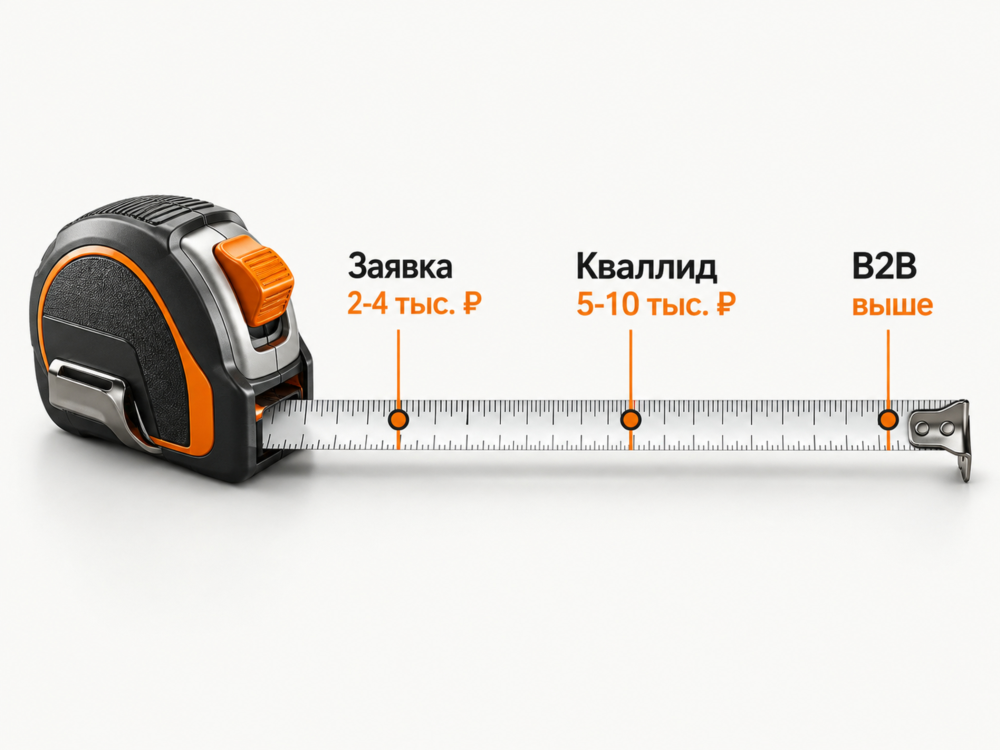
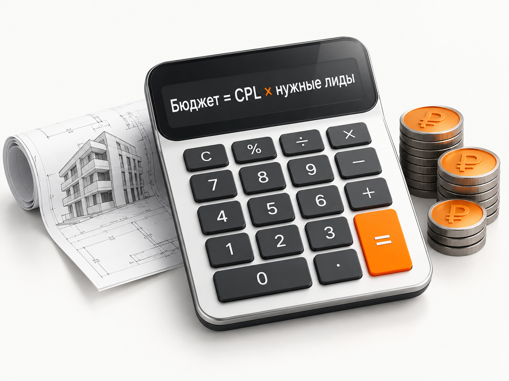
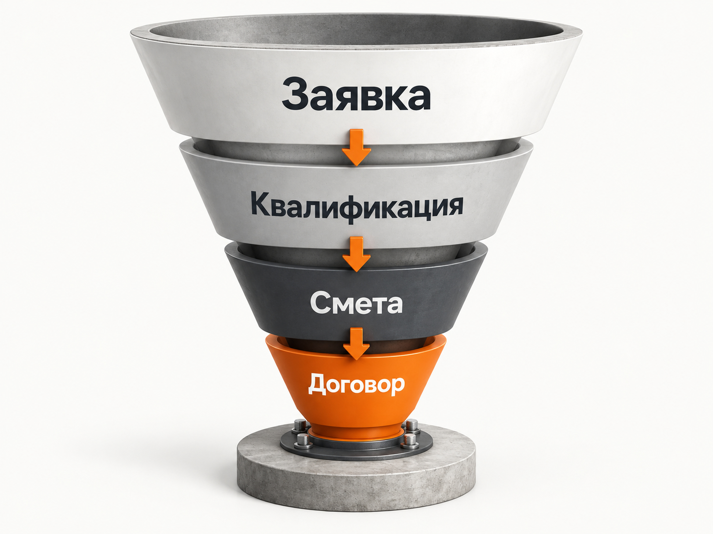

Блог о платном трафике
Продвижение строительной компании в 2026 году: инструкция и прогноз
Строительство - слишком широкая ниша, чтобы говорить о единой цене заявки. Строительство частного дома, монтаж кровли, ремонт квартиры, баня под ключ и промышленный ангар могут рекламироваться через один Яндекс Директ, но экономика у них будет совершенно разной.
По свежим российским кейсам 2025-2026 годов обычная заявка в строительных проектах может стоить примерно от 1 500 до 5 000 ₽, а в конкурентных регионах и на старте кампании заметно дороже. Квалифицированное обращение уже часто обходится в 5 000-10 000 ₽ и выше.
Это не «средние по рынку». Разброс слишком большой. Для первоначального прогноза я бы отталкивался от конкретного направления, региона, среднего чека, доли квалифицированных обращений и конверсии отдела продаж.
В этой статье речь именно о строительных услугах: ИЖС, банях, кровельных работах, ремонте и отделке, фундаментах, инженерных работах, коммерческом и промышленном строительстве. Продажу квартир застройщиками и розничную продажу стройматериалов лучше считать отдельно - там другая экономика и рекламная модель.
Что происходит со строительной нишей в 2026 году
Главное изменение последних лет - получать просто дешёвые заявки становится всё менее полезно. В дорогом строительном продукте между заполненной формой и договором может находиться несколько этапов:
реклама -> обращение -> квалификация -> расчёт или смета -> встреча -> договор
Именно поэтому два подрядчика с одинаковым CPL могут получать совершенно разный финансовый результат.
Хорошо это видно на длинной статистике одного российского проекта ИЖС. В 2023 году квалифицированный лид обходился в 3 628 ₽ без НДС, в 2024 году - в 3 707 ₽, в 2025 году уже в 6 412 ₽. За 2026 год на момент публикации показатель составлял 5 180 ₽, а доля квалифицированных обращений выросла до 42%. Автор кейса отдельно отмечает ухудшение рекламной ситуации с середины 2025 года.
На ИЖС дополнительно влияет ситуация с ипотекой. С 1 марта 2025 года действует механизм строительства частных домов по договорам подряда с использованием эскроу-счетов. Для семейной ипотеки при строительстве с подрядчиком использование эскроу обязательно. Это уже не только юридическая деталь, но и часть предложения строительной компании: возможность работать через эскроу и ипотеку может влиять на выбор подрядчика.
При этом ипотечный рынок остаётся активным, хотя динамика меняется от месяца к месяцу. В июле 2026 года банки выдали 85,5 тыс. ипотечных жилищных кредитов на 363,4 млрд ₽. Это было меньше июня, но количество выдач оказалось на 10,3% выше июля предыдущего года.
Для рекламы вывод простой: спрос есть, но его нельзя считать постоянной величиной. В ИЖС, кровле, ремонте, банях и других сезонных направлениях прогноз нужно регулярно сверять с реальным спросом и динамикой Вордстата. Яндекс позволяет смотреть историю запросов по месяцам и регионам.
Что показывают свежие кейсы Яндекс Директа в строительстве
Я собрал несколько российских примеров 2025-2026 годов. Их нельзя складывать и выводить среднюю стоимость лида: отличаются регионы, продукты, сайты и само определение конверсии. Но диапазон хорошо показывает реальную ситуацию.
- ИЖС, Ставропольский край, апрель 2026: 153 563 ₽ без НДС, 53 заявки по 2 897 ₽, квалификация 42%, квалифицированный лид 6 899 ₽.
- Плоские кровли, Московская область, январь-май 2026: 241 881 ₽ с НДС, 55 заявок по 4 398 ₽, квалификация около 40-50%, квалифицированный лид 9 773 ₽.
- Строительство бань, Нижний Новгород, март 2026: 94 заявки из Директа по 1 380 ₽, около 90% обращений автор кейса относит к целевым.
- Строительство домов, Москва и МО, июль-декабрь 2025: стоимость заявки снизилась с 14 496 до 4 700 ₽, стартовый бюджет 250 000 ₽ в месяц.
- Быстровозводимые здания, СЗФО, апрель 2026: расход 271 118 ₽, 210 макроконверсий, средняя цена 1 291 ₽.
Последний пример особенно хорошо показывает проблему сравнения кейсов. В 210 конверсий там входили заявка, целевой звонок и скачивание коммерческого предложения. Поэтому 1 291 ₽ нельзя сравнивать напрямую с квалифицированным лидом по кровельным работам за 9 773 ₽.
Нужно всегда сначала выяснять, что именно автор называет лидом.
Мой кейс по строительству домов
У меня есть отдельный кейс по рекламе строительства домов.
Он не заменяет этот прогноз, а показывает конкретный проект из практики.
Продвигалось строительство частных домов из керамического блока Porotherm. Использовались Поиск и РСЯ. В первую неделю после запуска заявка стоила больше 4 000 ₽, а к концу месяца стоимость удалось снизить примерно до 2 100 ₽. Основная часть обращений приходила из настроенных мной кампаний.
Данных по фактическим договорам и выручке заказчик не передавал, поэтому я не пытаюсь на основании этого кейса рассчитывать стоимость продажи.
Зато пример показывает другую вещь: первые дни рекламной кампании нельзя автоматически принимать за её нормальный рабочий результат. В строительстве требуется время на накопление запросов, проверку аудиторий, минусацию и перераспределение бюджета.
Подробную механику настройки я уже разбирал отдельно в материале «Яндекс Директ для строительной компании».
Здесь основной вопрос другой: сколько денег закладывать и какого результата ожидать.
Какую стоимость заявки закладывать в прогноз
На основании свежих кейсов я бы использовал следующие диапазоны только как первоначальную расчётную гипотезу.
Для регионального B2C-строительства рабочим стартовым ориентиром можно считать примерно 2 000-4 000 ₽ за первичную заявку.
Для ИЖС в Москве, Московской области и других конкурентных регионах я бы закладывал скорее 4 500-8 000 ₽ за заявку после стабилизации рекламы. На старте результат может быть значительно дороже. Кейс Москвы и области, где CPL сначала составлял 14 496 ₽, хорошо это показывает.
Для квалифицированного обращения в ИЖС и специализированных строительных услугах разумнее первоначально считать диапазон примерно 5 000-10 000 ₽.
В сложном B2B-строительстве я бы вообще не делал прогноз только по обычной форме. Там полезнее считать квалифицированного заказчика, запрос коммерческого предложения, расчёт объекта или другой этап, который действительно имеет коммерческую ценность.
Эти значения - мой расчётный ориентир на основании свежих опубликованных кейсов, а не статистическая средняя российского строительного рынка.

Как рассчитать рекламный бюджет строительной компании
Я бы не начинал с вопроса: «Сколько обычно тратят конкуренты?»
Нужна обратная логика.
Допустим, компания хочет получить 4 новых договора в месяц.
Из квалифицированных обращений в договор превращается 10%.
Тогда требуется:
4 / 10% = 40 квалифицированных лидов.
Если квалифицированный лид стоит 7 000 ₽:
40 × 7 000 = 280 000 ₽ рекламного бюджета.
После этого нужно проверить, выдерживает ли такую стоимость экономика самого договора.
Допустим, максимально допустимый CAC составляет 80 000 ₽. Если из квалифицированных лидов продаётся 10%, допустимая цена квалифицированного лида составит:
80 000 × 10% = 8 000 ₽.
Именно с этой цифрой уже имеет смысл сравнивать Яндекс Директ.
Если реклама приводит квалифицированного клиента за 6 000 ₽, экономика сходится. Если за 15 000 ₽ - нужно либо улучшать воронку, либо увеличивать допустимый CAC, либо признавать, что канал при текущей экономике не подходит.
Какой бюджет нужен для первого теста
Для небольшого регионального строительного проекта я бы обычно рассматривал 80 000-150 000 ₽ рекламного бюджета на первый полноценный месяц.
Для Москвы, Московской области, крупных городов, дорогого ИЖС или специализированного B2B разумнее рассчитывать примерно на 150 000-300 000 ₽.
Можно запустить рекламу и с меньшей суммой, но тогда проблема будет не только в количестве заявок. Маленький объём данных ограничивает обучение автоматических стратегий.
Сам Яндекс рекомендует для «Максимума конверсий» бюджет, достаточный минимум для 10 конверсий в неделю, а для нормального обучения указывает ориентир 10-20 конверсий.
Например, при CPL 5 000 ₽ десять конверсий требуют уже около 50 000 ₽ в неделю.
Это не значит, что строительная компания обязана сразу тратить 200 000 ₽ в месяц. Если спрос небольшой или такой бюджет экономически не оправдан, я бы не пытался искусственно запустить конверсионную стратегию на недостаточном объёме. Можно сначала собирать статистику другими способами.
Подробнее сам принцип расчёта разобран в материале «Прогноз бюджета Яндекс Директ».

Обычный лид и квалифицированный лид - разные показатели
Для строительства это одно из главных различий.
Форму могут заполнить люди, которые:
- находятся вне рабочей географии;
- планируют стройку через несколько лет;
- не имеют нужного бюджета;
- ищут только бесплатный расчёт;
- хотят отдельную мелкую работу вместо объекта под ключ;
- выбирают материал, но пока не подрядчика.
В кейсе ИЖС 2026 года квалификацию проходили примерно 42% заявок. В кейсе кровельных работ - около 40-50%.
Поэтому вполне реальна ситуация:
первичный CPL = 3 000 ₽
квалификация = 40%
стоимость квалифицированного лида = 7 500 ₽
Если показывать собственнику только первую цифру, эффективность рекламы выглядит в 2,5 раза лучше реальной.
Что считать квалифицированным лидом
Критерии зависят от строительной компании.
Для ИЖС это могут быть участок, подходящий регион, ориентировочный бюджет и реальный срок начала строительства.
Для кровельной компании - тип объекта, площадь кровли и местоположение.
Для ремонта - площадь объекта, тип ремонта, бюджет и срок начала работ.
Для промышленного строительства - площадь или назначение здания, регион, сроки реализации и примерный бюджет проекта.
Я бы фиксировал критерии квалификации до запуска рекламы. Иначе через месяц маркетолог и отдел продаж могут выяснить, что под словом «хорошая заявка» они понимали совершенно разные вещи.

Какие направления строительства нельзя смешивать
Если компания оказывает много услуг, сама тематика «строительство» слишком широкая для одной рекламной кампании.
Человеку, который ищет фундамент, не нужен общий лендинг с домами, банями, ремонтами и кровлей.
То же самое происходит в B2B. В свежем кейсе по быстровозводимым зданиям цена макроконверсии внутри одной кампании отличалась более чем в 2,5 раза: производство давало 899 ₽, склады - 990 ₽, ангары - 1 412 ₽, а направление автосервисов - 2 312 ₽.
Причина была не только в рекламе. У разных услуг разный спрос и разное намерение пользователя.
Я бы разделял как минимум крупные бизнес-направления:
ИЖС отдельно от ремонта, кровлю отдельно от полного строительства, B2B отдельно от B2C, а направления с сильно отличающимся чеком и маржинальностью - по возможности ещё и по собственной экономике.
При этом создавать по отдельной кампании на каждую ключевую фразу тоже не нужно. Алгоритмам Директа требуется достаточный объём данных.
С чего начинать рекламу в Яндекс Директе
В строительстве я в первую очередь хочу проверить уже существующий спрос.
Поэтому базовой точкой остаётся поиск.
Основные группы запросов:
- Прямая услуга: «строительство дома под ключ», «монтаж плоской кровли», «ремонт квартиры под ключ».
- Технология или материал: газобетон, каркас, кирпич, мембранная кровля.
- Тип объекта: дом, склад, ангар, производственный корпус, баня.
- Стоимость: «цена строительства дома», «сколько стоит ангар под ключ».
- География: услуга плюс город, район или область.
Современный Директ при этом работает не только на заданных ключевых фразах. Автотаргетинг анализирует объявление и посадочную страницу и может находить дополнительные запросы. На поиске он является обязательной частью доступных кампаний, поэтому после запуска особенно важно анализировать фактические поисковые запросы.
Для более детального управления можно использовать Единую перфоманс-кампанию. В ней Яндекс позволяет отдельно выбирать Поиск, РСЯ и Карты либо объединять доступные места размещения.
Нужна ли РСЯ строительной компании
Да, но я бы не воспринимал её как обязательный источник дешёвых заявок.
У строительства длинный цикл выбора. Человек может сегодня посмотреть стоимость, через неделю изучать технологии, затем посетить несколько сайтов подрядчиков и только после этого запросить смету.
Поэтому РСЯ полезна как дополнительный источник аудитории и для повторных касаний.
Особенно хорошо строительная ниша подходит для визуальной рекламы: можно показывать реальные объекты, этапы строительства, проекты домов, фасады и результат работ.
Но оценивать РСЯ нужно по тем же критериям, что и Поиск: квалифицированные обращения, расчёты, встречи и договоры.
Сайт влияет на CPL не меньше настроек Директа
Если пользователь ищет строительство дома из газобетона, а после клика видит общую страницу «Мы строим всё», часть рекламного бюджета уже потеряна.
Для основных направлений нужны самостоятельные страницы или хотя бы полноценные блоки с конкретным предложением.
На странице должны быстро находиться:
реальные объекты, технология строительства, география работы, порядок расчёта стоимости, варианты комплектации, этапы работ, гарантии, информация о компании и понятный следующий шаг.
В ИЖС в 2026 году я бы отдельно показывал работу с эскроу и ипотечными программами, если компания действительно соответствует условиям. Для части покупателей это уже самостоятельный критерий выбора подрядчика.
Почему реальные объекты важнее рекламных обещаний
Строительство относится к услугам с высоким риском для клиента.
Он выбирает не красивый баннер, а компанию, которой собирается передать значительную сумму денег и ждать результат несколько месяцев.
Поэтому фотографии реальных строек, законченные объекты, адреса или география выполненных работ, этапы строительства и подробные кейсы зачастую полезнее очередного обещания «строим качественно и точно в срок».
В рекламном объявлении нужно дать причину перейти на сайт. Доверие уже должно формироваться на самой странице.
Аналитика должна доходить до CRM
Для строительной компании недостаточно настроить цель «форма отправлена».
Яндекс Метрика позволяет передавать офлайн-конверсии и связывать события после обращения с рекламным визитом. Данные из CRM можно использовать для анализа и оптимизации рекламы.
Практически я бы стремился передавать как минимум:
заявка -> квалифицирован -> расчёт/смета -> договор
Если договоров мало для обучения алгоритма, можно использовать более частый промежуточный этап, например квалифицированный лид.
Главное, чтобы он действительно коррелировал с продажей.
Оптимизироваться на просмотр страницы или нажатие кнопки только ради увеличения количества «конверсий» для строительного бизнеса смысла мало.
Пример прогноза
Допустим, строительная компания работает в регионе.
Для первого расчёта закладываем:
- рекламный бюджет - 120 000 ₽;
- первичный CPL - 3 000 ₽;
- квалификация - 40%;
- конверсия квалифицированного лида в договор - 10%.
Расчёт:
120 000 / 3 000 = 40 первичных заявок.
40 × 40% = 16 квалифицированных лидов.
16 × 10% = 1,6 договора.
То есть рабочая гипотеза - примерно 1-2 договора с бюджета 120 000 ₽.
Это не обещание результата. Самая слабая цифра здесь - конверсия в договор. Её нельзя нормально получить из чужих кейсов. У конкретной компании она зависит от продукта, цен, менеджеров, скорости ответа, репутации и самого определения квалифицированного лида.
Поэтому перед запуском я бы в первую очередь запросил реальные данные отдела продаж за последние месяцы.
Если компания не знает собственную конверсию, прогноз по продажам автоматически становится значительно менее точным.
Что делать после первого месяца
Первый месяц нужен не только для получения лидов.
По итогам должен появиться собственный набор данных:
стоимость обычного обращения, доля квалификации, стоимость квалифицированного лида, результаты разных услуг, география, поисковые запросы, источники заявок и дальнейшая судьба лидов.
После этого чужие кейсы становятся менее важны.
Если фактический квалифицированный лид стоит 6 500 ₽, а экономика компании допускает 9 000 ₽, реклама имеет запас для масштабирования.
Если он стоит 14 000 ₽ при допустимых 7 000 ₽, нужно искать причину: трафик, предложение, сайт, квалификация или продажи.
Как я бы запускал продвижение строительной компании
Последовательность для нового проекта такая:
- Разделить услуги и выбрать направления, которые действительно нужно загрузить заказами.
- Посчитать допустимую стоимость договора и квалифицированного лида.
- Проверить спрос и сезонность по региону.
- Подготовить отдельные посадочные страницы для основных направлений.
- Настроить Метрику, звонки и CRM.
- Запустить горячий спрос в Яндекс Директе.
- После появления статистики расширять охват через РСЯ, автотаргетинг и дополнительные сегменты.
- Оптимизировать рекламу по квалифицированным обращениям и дальнейшим этапам сделки.
Какие ещё каналы использовать
Яндекс Директ я бы ставил в центр платного продвижения там, где уже существует сформированный поисковый спрос.
Но единственным каналом он быть не обязан.
Для локальных услуг могут хорошо дополнять рекламу Яндекс Карты. Для ИЖС, бань и отдельных строительных работ - Авито. SEO имеет смысл как более длинный канал получения поискового трафика. Контент, видео и социальные сети полезны там, где клиент долго изучает компанию перед договором.
При этом я бы не запускал сразу пять каналов с маленьким бюджетом в каждом. Сначала лучше получить достаточно данных хотя бы в одном источнике и понять реальную экономику привлечения заказчика.
Какой результат считать нормальным в 2026 году
Я бы не ставил универсальную цель вроде «лид должен стоить максимум 2 000 ₽».
По свежим данным рынка гораздо реалистичнее исходить из следующей модели:
для регионального B2C-проекта первичная гипотеза может начинаться примерно с 2 000-4 000 ₽ за заявку;
в конкурентном ИЖС - примерно с 4 500-8 000 ₽;
квалифицированный строительный лид - примерно с 5 000-10 000 ₽ и выше;
в сложном B2B главным KPI должна становиться не обычная форма, а стоимость квалифицированного потенциального заказчика.
У конкретного бизнеса нормальная цена может быть и выше этих цифр, если контракт приносит достаточно прибыли.
И наоборот, даже лид за 1 000 ₽ может быть слишком дорогим, если большая часть таких обращений не проходит квалификацию.
Итог
В 2026 году Яндекс Директ остаётся одним из основных каналов привлечения сформированного спроса для строительных компаний. Но сама стоимость заявки почти ничего не говорит об эффективности рекламы без понимания её качества.
Свежие российские кейсы показывают очень большой разброс: от заявок около 1 500-3 000 ₽ в отдельных региональных проектах до 4 000-5 000 ₽ и выше в более конкурентных направлениях. Квалифицированный лид часто оказывается в два раза дороже обычной формы.
Поэтому нормальный прогноз для строительного бизнеса строится не от «среднего CPL по нише», а в обратную сторону:
dопустимая стоимость договора -> конверсия продажи -> допустимый квалифицированный лид -> доля квалификации -> допустимый первичный CPL -> рекламный бюджет.
После первого полноценного месяца этот расчёт нужно заменить собственными фактическими данными компании.